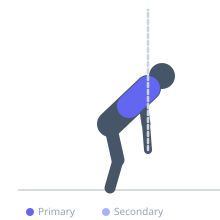
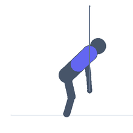

Exercise guide / Overhead Band Pull-Apart
Overhead Band Pull-Apart
The overhead band pull-apart starts with arms raised overhead holding a resistance band and pulls the band apart behind the head, training the rear deltoids and middle trapezius through an overhead pulling arc. This positioning creates different stress on the shoulder rotators compared to the standard chest-height pull-apart, challenging the external rotators in a more vulnerable and often undertrained overhead position.
Primary muscles
deltoid posterior
trapezius middle
Secondary muscles
rhomboid major
Equipment
Resistance Band (Loop / Mini Band)


Starting position
- Hold a resistance band with both hands wider than shoulder width. Raise arms overhead — band taut across the front overhead.
Setup
- Use a very light band — the overhead position greatly increases mechanical disadvantage.
Steps
- Step 1: Begin with arms overhead, band taut.
- Step 2: Pull the band apart by moving the hands outward and downward in an arc.
- Step 3: Continue until the band reaches behind the head or at least behind the ears.
- Step 4: Return to the overhead position.
- Step 5: Repeat.
Coaching cues
- Light band — quality beats quantity
- Lead with the pinkies as you pull apart
- Full arc — behind the head, not just beside
Breathing
- Exhale on the pull-apart. Inhale returning.
Range of motion
- Band from overhead front to behind the head.
Tempo
- 2-1-2-0
Common mistakes
- Using too strong a band — the overhead position significantly reduces load capacity
- Bending the elbows — arms stay straight throughout
Safety
- Very light band tension — this is a mobility and shoulder health exercise
- Stop if shoulder pain occurs at any point in the arc
Training
- rehabilitation: 15–25 reps
- rehabilitation: 2–4 sets
- Rest: {'rehabilitation': 60}